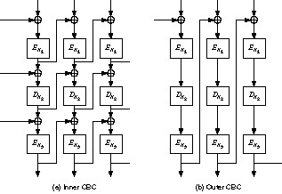
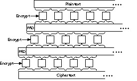
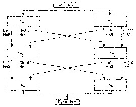
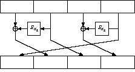

There are many ways to combine block algorithms to get new algorithms. The impetus behind these schemes is to try to increase security without going through the trouble of designing a new algorithm. DES is a secure algorithm; it has been cryptanalyzed for a good 20 years and the most practical way to break it is still brute force. However, the key is too short. Wouldn’t it be nice to use DES as a building block for another algorithm with a longer key? We’d have the best of both worlds: the assurance of two decades of cryptanalysis plus a long key.
Multiple encryption is one combination technique: using an algorithm to encrypt the same plaintext block multiple times with multiple keys. Cascading is like multiple encryption, but uses different algorithms. There are other techniques.
Encrypting a plaintext block twice with the same key, whether with the same algorithm or a different one, is not smart. For the same algorithm, it does not affect the complexity of a brute-force search. (Remember, you assume a cryptanalyst knows the algorithm including the number of encryptions used.) For different algorithms, it may or may not. If you are going to use any of the techniques in this chapter, make sure the multiple keys are different and independent.
A naïve way of improving the security of a block algorithm is to encrypt a block twice with two different keys. First encrypt a block with the first key, then encrypt the resulting ciphertext with the second key. Decryption is the reverse process.
C = EK2(EK1(P)) P = DK1(DK2(C))
If the block algorithm is a group (see Section 11.3), then there is always a K3 such that
C = EK2(EK1(P)) = EK3(P)
If this is not the case, the resultant doubly-encrypted ciphertext block should be much harder to break using an exhaustive search. Instead of 2n attempts (where n is the bit length of the key), it would require 22n attempts. If the algorithm is a 64-bit algorithm, the doubly-encrypted ciphertext would require 2128 attempts to find the key.
This turns out not to be true for a known-plaintext attack. Merkle and Hellman [1075] developed a time-memory trade-off that could break this double-encryption scheme in 2n + 1 encryptions, not in 22n encryptions. (They showed this for DES, but the result can be generalized to any block algorithm.) The attack is called a meet-in-the-middle attack; it works by encrypting from one end, decrypting from the other, and matching the results in the middle.
In this attack, the cryptanalyst knows P1, C1, P2, and C2, such that
C1 = EK2(EK1(P1)) C2 = EK2(EK1(P2))
For each possible K, he computes EK(P1) and stores the result in memory. After collecting them all, he computes DK(C1) for each K and looks for the same result in memory. If he finds it, it is possible that the current key is K2 and the key in memory is K1. He tries encrypting P2 with K1 and K2; if he gets C2 he can be pretty sure (with a probability of success of 1 in 22m - 2n, where m is the block size) that he has both K1 and K2. If not, he keeps looking. The maximum number of encryption trials he will probably have to run is 2*2n, or 2n + 1. If the probability of error is too large, he can use a third ciphertext block to get a probability of success of 1 in 23m - 2n. There are still other optimizations [912].
This attack requires a lot of memory: 2n blocks. For a 56-bit algorithm, this translates to 256 64-bit blocks, or 1017 bytes. This is still considerably more memory storage than one could comfortably comprehend, but it’s enough to convince the most paranoid of cryptographers that double encryption is not worth anything.
For a 128-bit key, the amount of memory required is an enormous 1039 bytes. If we assume that a way exists to store a bit of information on a single atom of aluminum, the memory device required to launch this attack would be a cube of solid aluminum over a kilometer on a side. And then you need some place to put it! The meet-in-the middle attack seems infeasible for keys this size.
Another double-encryption method, sometimes called Davies-Price, is a variant of CBC [435].
Ci = EK1(Pi ⊕ EK2(Ci - 1)) Pi = DK1(Ci) ⊕ EK2(Ci - 1)
They claim “no special virtue of this mode,” but it seems to be vulnerable to the same meet-in-the-middle attacks as other double-encryption modes.
A better idea, proposed by Tuchman in [1551], operates on a block three times with two keys: with the first key, then with the second key, and finally with the first key again. He suggested that the sender first encrypt with the first key, then decrypt with the second key, and finally encrypt with the first key. The receiver decrypts with the first key, then encrypts with the second key, and finally decrypts with the first key.
C = EK1(DK2(EK1(P))) P = DK1(EK2(DK1(C)))
This is sometimes called encrypt-decrypt-encrypt (EDE) mode [55]. If the block algorithm has an n-bit key, then this scheme has a 2n-bit key. The curious encrypt-decrypt-encrypt pattern was designed by IBM to preserve compatibility with conventional implementations of the algorithm: Setting the two keys equal to each other is identical to encrypting once with the key. There is no security inherent in the encrypt-decrypt-encrypt pattern, but this mode has been adopted to improve the DES algorithm in the X9.17 and ISO 8732 standards [55,761].
K1 and K2 alternate to prevent the meet-in-the-middle attack previously described. If C = EK2(EK1(EK1(P))), then a cryptanalyst could precompute EK1(EK1(P))) for every possible K1 and then proceed with the attack. It only requires 2n + 2 encryptions.
Triple encryption with two keys is not susceptible to the same meet-in-the-middle attack described earlier. But Merkle and Hellman developed another time-memory trade-off that could break this technique in 2n - 1 steps using 2n blocks of memory [1075].
For each possible K2, decrypt 0 and store the result in memory. Then, decrypt 0 with each possible K1 to get P. Triple-encrypt P to get C, and then decrypt C with K1. If that decryption is a decryption of 0 with a K2 (stored in memory), the K1 K2 pair is a possible candidate. Check if it is right. If it’s not, keep looking.
This is a chosen-plaintext attack, requiring an enormous amount of chosen plaintext to mount. It requires 2n time and memory, and 2m chosen plaintexts. It is not very practical, but it is a weakness.
Paul van Oorschot and Michael Wiener converted this to a known-plaintext attack, requiring p known plaintexts. This example assumes EDE mode.
b = DK1(C)
where C is the resulting ciphertext from a known plaintext.b = EK2(a)
The attack requires 2n + m/p time and p memory. For DES, this is 2120/p [1558]. For p greater than 256, this attack is faster than exhaustive search.
If you are going to use triple encryption, I recommend three different keys. The key length is longer, but key storage is usually not a problem. Bits are cheap.
C = EK3(DK2(EK1(P))) P = DK1(EK2(DK3(C)))
The best time-memory trade-off attack takes 22n steps and requires 2n blocks of memory; it’s a meet-in-the-middle attack [1075]. Triple encryption, with three independent keys, is as secure as one might naïvely expect double encryption to be.
There is a secure way of using triple encryption with two keys that prevents the previous attack, called Triple Encryption with Minimum Key (TEMK) [858]. The trick is to derive three keys from two: X1 and X2:
K1 = EX1(DX2(EX1(T1))) K2 = EX1(DX2(EX1(T2))) K3 = EX1(DX2(EX1(T3)))
T1, T2, and T3 are constants, which do not have to be secret. This is a special construction that guarantees that for any particular pair of keys, the best attack is a known-plaintext attack.
It’s not enough to just specify triple encryption; there are several ways to do it. The decision of which to use affects both security and efficiency.
Here are two possible triple-encryption modes:
Ci = EK3(Si ⊕ Ci - 1); Si = DK2(Ti ⊕ Si - 1); Ti = EK1(Pi ⊕ Ti - 1) Pi = Ti - 1 ⊕ DK1(Ti); Ti = Si - 1 ⊕ EK2(Si); Si = Ci - 1 ⊕ DK3(Ci)
C0, S0, and T0 are IVs.Ci = EK3(DK2(EK1(Pi ⊕ Ci - 1))) Pi = Ci - 1 ⊕ DK1(EK2(DK3(Ci)))

Figure 15.1 Triple encryption in CBC mode.
Both modes require more resources than single encryption: more hardware or more time. However, given three encryption chips, the throughput of inner-CBC is no slower than single encryption. Since the three CBC encryptions are independent, three chips can be kept busy all the time, each feeding back into itself.
On the other hand, outer-CBC feedback is outside the three encryptions. This means that even with three chips, the throughput is only one-third that of single encryption. To get the same throughput with outer-CBC, you need to interleave IVs (see Section 9.12):
Ci = EK3(DK2(EK1(Pi ⊕ Ci-3)))
In this case C0, C-1, and C-2 are IVs. This doesn’t help software implementations any, unless you have a parallel machine.
Unfortunately, the simpler mode is also the least secure. Biham analyzed various modes with respect to chosen-ciphertext differential cryptanalysis and found that inner-CBC is only slightly more secure than single encryption against a differential attack. If you think of triple encryption as a single larger algorithm, then inner feedbacks allow the introduction of external and known information into the inner workings of the algorithm; this facilitates cryptanalysis. The differential attacks require enormous amounts of chosen ciphertext to mount and are not very practical, but the results should be enough to give the most paranoid pause. Another analysis against meet-in-the-middle and brute-force attacks concludes that they are all equally secure [806].
There are other modes, as well. You can encrypt the entire file once in ECB, then twice in CBC; or once in CBC, once in ECB, and once in CBC; or twice in CBC and once in ECB. Biham showed that these variants are no more secure than single DES against a chosen-plaintext differential cryptanalysis attack [162]. And he doesn’t have high hopes for any other variants. If you are going to use triple encryption, use modes with outer feedback.
Before there were proofs that DES does not form a group, several schemes were proposed for multiple encryption. One way to guarantee that triple encryption doesn’t reduce to single encryption is to change the effective block size. One simple method is to add a bit of padding. Pad the text with a string of random bits, half a block in length, between the first and second and between the second and third encryptions (see Figure 15.2). If p is the padding function, then:
C = EK3(P(EK2(P(EK1(P)))))

Figure 15.2 Triple encryption with padding.
This padding not only disrupts patterns, but also overlaps encrypted blocks like bricks. It only adds one block to the length of the message.
Another technique, proposed by Carl Ellison, is to use some kind of keyless permutation function between the three encryptions. The permutation could work on large blocks — 8 kilobytes or so — and would effectively give this variant a block size of 8 kilobytes. Assuming that the permutation is fast, this variant is not much slower than basic triple encryption.
C = EK3(T(EK2(T(EK1(P)))))
T collects a block of input (up to 8 kilobytes in length) and uses a pseudo-random-number generator to transpose it. A 1-bit change in the input causes 8 changed output bytes after the first encryption, up to 64 changed output bytes after the second encryption, and up to 512 changed output bytes after the third encryption. If each block algorithm is in CBC mode, as originally proposed, then the effect of a single changed input bit is likely to be the entire 8 kilobyte block, even in blocks other than the first.
The most recent variant of this scheme responded to Biham’s attack on inner-CBC by including a whitening pass to hide plaintext patterns. That pass is a stream XOR with a cryptographically secure random-number generator called R below. The T on either side of it prevents the cryptanalyst from knowing a priori which key was used to encrypt any given byte on input to the last encryption. The second encryption is labelled nE (encryption with one of n different keys, used cyclically):
C = EK3(R(T(nEK2(T(EK1(R))))))
All encryptions are in ECB mode and keys are provided at least for the n + 2 encryption keys and the cryptographically secure random-number generator.
This scheme was proposed with DES, but works with any block algorithm. I know of no analysis of the security of this scheme.
There is some argument in the academic community whether a 64-bit block is long enough. On the one hand, a 64-bit block length only diffuses plaintext over 8 bytes of ciphertext. On the other hand, a longer block length makes it harder to hide patterns securely; there is more room to make mistakes.
Some propose doubling the block length of an algorithm using multiple encryptions [299]. Before implementing any of these, look for the possibility of meet-in-the-middle attacks. Richard Outerbridge’s scheme [300], illustrated in Figure 15.3, is no more secure than single-block, two-key triple encryption [859].

Figure 15.3 Doubling the block length.
However, I advise against this sort of thing. It isn’t faster than conventional triple encryption: six encryptions are still required to encrypt two blocks of data. We know the characteristics of triple encryption; constructions like this often have hidden problems.
The problem with two-key triple encryption is that it only doubles the size of the keyspace, but it requires three encryptions per block of plaintext. Wouldn’t it be nice to find some clever way of combining two encryptions that would double the size of the keyspace?
This method uses a block algorithm to generate two keystreams, which are then used to encrypt the plaintext.
Si = EK1(Si - 1 ⊕ I1); I1 = I1 + 1 Ti = EK2(Ti - 1 ⊕ I2); I2 = I2 + 1 Ci = Pi ⊕ Si ⊕ Ti
Si and Ti are internal variables, and I1 and I2 are counters. Two copies of the block algorithm run in a kind of hybrid OFB/counter mode, and the plaintext, Si, and Ti are XORed together. The two keys, K1 and K2, are independent. I know of no cryptanalysis of this variant.
This method was designed for encrypting multiple messages of a fixed length, for example, disk blocks [186,188]. Use two keys: K1 and K2. First, use the algorithm and K1 to generate a mask of the required block length. This mask will be used repeatedly to encrypt messages with the same keys. Then, XOR the plaintext message with the mask. Finally, encrypt the XORed plaintext with the algorithm and K2 in ECB mode.
This mode has not been analyzed outside the paper in which it was proposed. Clearly it is at least as strong as a single ECB encryption and may be as strong as two passes with the algorithm. Possibly, a cryptanalyst could search for the two keys independently, if several known plaintext files are encrypted with the same key.
To thwart analysis of identical blocks in the same positions of different messages, you can add an IV. Unlike an IV in any other mode, here the IV is XORed with every block of the message before ECB encryption.
Matt Blaze designed this mode for his UNIX Cryptographic File System (CFS). It is a nice mode because the latency is only one encryption in ECB mode; the mask can be generated once and stored. In CFS, DES is the block algorithm.
In [1644,1645], DES is used as a building block for a series of block algorithms with both larger key sizes and larger block sizes. These constructions do not depend on DES in any way and can be used with any block algorithm.
The first, xDES1, is simply a Luby-Rackoff construction with the block cipher as the underlying function (see Section 14.11). The block size is twice the size of the underlying block cipher and the key size is three times the size of the underlying block cipher. In each of 3 rounds, encrypt the right half with the block algorithm and one of the keys, XOR the result with the left half, and swap the two halves.
This is faster than conventional triple encryption, since three encryptions encrypt a block twice as large as the underlying algorithm. But there is also a simple meet-in-the-middle attack that finds the key with a table the size of 2k, where k is the key size of the underlying algorithm. Encrypt the right half of a plaintext block with all possible values of K1, XOR the left half of the plaintext, and store these values in a table. Then, encrypt the right half of the ciphertext with all possible values of K3 and look for a match in the table. If you find one, the key pair K1 and K3 are possible candidates for the right key. Repeat the attack a few times, and only one candidate will remain. This shows that xDES1 is not an ideal solution. Even worse, there is a chosen plaintext attack that proves xDES1 is not much stronger than the underlying block cipher [858].
xDES2 extends this idea to a 5-round algorithm with a block size 4 times that of the underlying block cipher and a key size 10 times that of the underlying block cipher. Figure 15.4 is one round of xDES2; each of the four sub-blocks are the size of the underlying block ciphers and all 10 keys are independent.

Figure 15.4 One round of xDES2.
This scheme is also faster than triple encryption: Ten encryptions are used to encrypt a block four times the size of the underlying block cipher. However, it is vulnerable to differential cryptanalysis [858] and should not be used. The scheme is even vulnerable if DES with independent round keys is used.
For i ≥ 3, xDESi is probably too big to be useful as a block algorithm. For example, the block size for xDES3 is 6 times that of the underlying cipher, the key size is 21 times, and 21 encryptions are required to encrypt a block 6 times that of the underlying block cipher. Triple encryption is faster.
If triple encryption isn’t secure enough — perhaps you need to encrypt triple-encryption keys using an even stronger algorithm — then higher multiples might be in order. Quintuple encryption is very strong against meet-in-the-middle attacks. (Similar arguments to the ones used with double encryption can show that quadruple encryption provides minimal security improvements over triple encryption.)
C = EK1(DK2(EK3(DK2(EK1(P))))) P = DK1(EK2(DK3(EK2(DK1(C)))))
This construction is backwards compatible with triple encryption if K2 = K3, and is backwards compatible with single encryption if K1 = K2 = K3. Of course, it would be even stronger if all five keys were independent.
This method was designed by IBM for their Commercial Data Masking Facility or CDMF (see Section 24.8) to shrink a 56-bit DES key to a 40-bit key suitable for export [785]. It assumes that the original DES key includes the parity bits.
0xc408b0540ba1e0ae, and XOR the result with the output of step (1).
0xef2c041ce6382fe6. This key is then used for message encryption.
Remember that this method shortens the key length, and thereby weakens the algorithm.
Whitening is the name given to the technique of XORing some key material with the input to a block algorithm, and XORing some other key material with the output. This was first done in the DESX variant developed by RSA Data Security, Inc., and then (presumably independently) in Khufu and Khafre. (Rivest named this technique; it’s a nonstandard usage of the word.)
The idea is to prevent a cryptanalyst from obtaining a plaintext/ciphertext pair for the underlying algorithm. The technique forces a cryptanalyst to guess not only the algorithm key, but also one of the whitening values. Since there is an XOR both before and after the block algorithm, this technique is not susceptible to a meet-in-the-middle attack.
C = K3 ⊕ EK2(P ⊕ K1) P = K1 ⊕ DK2(C ⊕ K3)
If K1 = K3, then a brute-force attack requires 2n + m/p operations, where n is the key size, m is the block size, and p is the number of known plaintexts. If K1 and K3 are different, then a brute-force attack requires 2n + m + 1 operations with three known plaintexts. Against differential and linear cryptanalysis, these measures only provide a few key bits of protection. But computationally this is a very cheap way to increase the security of a block algorithm.
What about encrypting a message once with Algorithm A and key KA, then again with Algorithm B and key KB? Maybe Alice and Bob have different ideas about which algorithms are secure: Alice wants to use Algorithm A and Bob wants to use Algorithm B. This technique is sometimes called cascading, and can be extended far beyond only two algorithms and keys.
Pessimists have said that there is no guarantee that the two algorithms will work together to increase security. There may be subtle interactions between the two algorithms that actually decrease security. Even triple encryption with three different algorithms may not be as secure as you think. Cryptography is a black art; if you don’t know what you are doing, you can easily get into trouble.
Reality is much rosier. The previous warnings are true only if the different keys are related to each other. If all of the multiple keys are independent, then the resultant cascade is at least as difficult to break as the first algorithm in the cascade [1033]. If the second algorithm is vulnerable to a chosen-plaintext attack, then the first algorithm might facilitate that attack and make the second algorithm vulnerable to a known-plaintext attack when used in a cascade. This potential attack is not limited to encryption algorithms: If you let someone else specify any algorithm which is used on your message before encryption, then you had better be sure that your encryption will withstand a chosen-plaintext attack. (Note that the most common algorithm used for compressing and digitizing speech to modem speeds, used before any encryption, is CELP — designed by the NSA.)
This can be better phrased: Using a chosen-plaintext attack, a cascade of ciphers is at least as hard to break as any of its component ciphers [858]. A previous result showed that the cascade is at least as difficult to break as the strongest algorithm, but that result is based on some unstated assumptions [528]. Only if the algorithms commute, as they do in the case of cascaded stream ciphers (or block ciphers in OFB mode), is the cascade at least as strong as the strongest algorithm.
If Alice and Bob do not trust each other’s algorithms, they can use a cascade. If these are stream algorithms, the order doesn’t matter. If they are block algorithms, Alice can first use Algorithm A and then use Algorithm B. Bob, who trusts Algorithm B more, can use Algorithm B followed by Algorithm A. They might even add a good stream cipher between the two algorithms; it can’t hurt and could very well increase security.
Remember that the keys for each algorithm in the cascade must be independent. If Algorithm A has a 64-bit key and Algorithm B has a 128-bit key, then the resultant cascade must have a 192-bit key. If you don’t use independent keys, then the pessimists are much more likely to be right.
Here’s another way to combine multiple block algorithms, one that is guaranteed to be at least as secure as both algorithms. With two algorithms (and two independent keys):
Assuming the random-bit string is indeed random, this method encrypts M with a one-time pad and then encrypts both the pad and the encrypted message with each of the two algorithms. Since both are required to reconstruct M, a cryptanalyst must break both algorithms. The drawback is that the ciphertext is twice the size of the plaintext.
This method can be extended to multiple algorithms, but the ciphertext expands with each additional algorithm. It’s a good idea, but I don’t think it’s very practical.